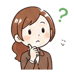

💡 元ノートの語呂・具体例
「サイヤ人のみ限定・満足、公園はマジでゴミ箱だらけ」サイヤ人＝サイモン（限定合理性＋満足化）／公園＝コーエン・マジ＝マーチ（＋オルセン）＝ゴミ箱モデル
🤪 変なイメージで丸暗記（※サイヤ人はオリジナル風イラスト）
🌳🗑️🗑️🌲🗑️🗑️🗑️🌳
🗑️🗑️🌳🗑️🗑️🗑️🌲🗑️
サイヤ人（＝サイモン：限定合理性で“満足”化）が、公園(コーエン)はマジ(マーチ)でゴミ箱だらけと叫ぶ。
→ サイモン＝限定・満足／コーエン・マーチ＝ゴミ箱モデル、を1枚の絵で結びつけて覚える。
図1：経済人 vs 経営人（最適化 vs 満足化）
💡 かんたん解説
人間は神様じゃないので、全部の選択肢を知って一番いいものを選ぶ（最適化）なんて無理。だから現実の人は「これで十分OK」という案が見つかったらそこで決める（満足化）。これがサイモンの考え。
🔑 現実の人＝満足化（最善ではなく“及第点”で決める）
経済人モデル完全な情報＋完全な合理性。あらゆる案を比べて最善（最適化）を選ぶ＝理想論
経営人モデル情報も能力も限界あり（限定合理性）。及第点で決める＝満足化＝現実
急所：限定合理性のもとでは「最適化」ではなく満足化（satisficing）。最善を探し尽くさない。
図2：満足化＝願望水準を超えた最初の案で打ち切り
案1
水準未満✗
→
案2
水準未満✗
→
案3
水準クリア✓
⏹
探索ストップ
これに決定
全部を比較しない。「これで十分」という願望水準を満たした時点で探索をやめる。
⚡ チェック ─ 経済人 vs 経営人・満足化
Q. 限定合理性のもとで人が選ぶのは？
満足化。すべての選択肢は比べきれないため、願望水準を満たす最初の案で打ち切る。
Q. 経営人モデルの前提は？
限定合理性。完全合理は理想論の経済人モデル。
図3：サイモンの意思決定プロセス（順番が大事）
💡 小学生でもわかる！かんたん解説
サイモンは「人が何かを決めるとき、ちゃんとした順番がある！」と言いました。
①まず「何が困ってるの？」を探す → ②次に「どんな方法があるか？」を考える → ③「どれにするか決める」（ベストじゃなくて"まあOK"で決めてOK！） → ④「やってみてどうだった？」を確認する、この4段階です。
🔑 情報→設計→選択→実行（④実行＝Review）｜順番の入れ替えはひっかけ
①
情報活動
Intelligence（インテリジェンス）
🔍
❓「何が問題なの？」を探すフェーズ
🍱 ランチの例
「あれ、お昼どうしよう？お腹すいたな〜」と問題に気づく
🏢 会社の例
「売上が落ちてる…なぜだ？」と現状を分析して問題を発見する
⬇
❓「どんな解決策がある？」を考えるフェーズ
🍱 ランチの例
「コンビニ・定食屋・お弁当持参…」と選択肢をリストアップ
🏢 会社の例
「値下げ・新商品・広告強化・営業増員…」と代替案を考え出す
⬇
❓「どれにするか？」を決めるフェーズ（＝満足化！）
🍱 ランチの例
「近くて1000円以下の定食屋でいいや！」⇒ 完璧でなく"まあOK"で決める
🏢 会社の例
「広告強化で行こう！完璧じゃないけど十分よさそう」と満足解で決定
⭐ 全部の選択肢を調べ尽くさなくていい。「これでOK！」と思ったら決める＝満足化原理（サイモンの核心）
⬇
❓「やってみてどうだった？」を確かめるフェーズ
🍱 ランチの例
「食べてみた！おいしかった・安かった・また来よう」と結果を確認
🏢 会社の例
「広告の効果は？売上は回復したか？」と結果を評価・フィードバック
①情報
Intelligence
→
②設計
Design
→
③選択
Choice
→
④実行
Review
情報→設計→選択→実行（Review）の順。「選択が最初」などの順番入れ替えはひっかけ。
⚡ チェック ─ サイモンの意思決定プロセス
Q. 正しい順番は？
情報→設計→選択→実行（Review）。順番の入れ替えがひっかけ。
論点
4
ゴミ箱モデルとは？意思決定の“なりゆき”を理解しよう
決定は「じっくり考えて」ではなく、偶然・なりゆきで起こる（コーエン・マーチ・オルセン）

会議って、ちゃんと問題を考えてから答えを決めるんですよね？
それが理想だね。でも現実はバラバラに放り込まれて、偶然そろった時に決まるんだ！
1
考え方（理想 vs 現実）
▶ 理想の流れ
問題 ➡ じっくり考える ➡ 解
▶ 現実（ゴミ箱モデル）
問題・解・参加者・選択機会が🗑️でバラバラ
→ たまたま噛み合うと決定
ポイント
✓整然とではなく “偶然・なりゆき” で決まる
✓提唱＝コーエン・マーチ・オルセン
2
具体例で理解しよう
🏢 会議の例：「新システム導入（＝解）」を推したい人がいて、ちょうど予算が余り（選択機会）、苦情（問題）も出て、決裁者（参加者）も同席 → 偶然そろって「導入決定」。
💡 ここが重要！
問題を解くために解を選んだのではなく、解の“出番”が来ただけ。「解が問題を探す」こともある。
3
よくある誤解に注意！
✕
誤解：4要素は論理的・整然と順番どおりに結びついて決定する。
✓
正解：ゴミ箱の中身のように偶然・無秩序に結びつく。解が先に存在することもある。
4
まとめ
✓4要素＝問題・解・参加者・選択機会
✓偶然マッチした時に決定（整然とではない）
✓解が問題を探すことも（サイモンとの違い）
5
確認問題
ゴミ箱モデルを提唱したのは誰でしょう？
① サイモン ② コーエン・マーチ・オルセン
③ アンゾフ ④ メイヨー
（答え：② ＝ ゴミ箱モデル）
🗑️ ゴミ箱モデル（組織化された無秩序）
決定は「じっくり考えて」ではなく、偶然・なりゆきで起こる。コーエン・マーチ・オルセン
⚠️ よくある誤解（理想の手順）
問題 ➡
じっくり考える ➡
最適な解
論理的・整然と進む … と思いがち ✕
✅ 正しい理解（現実の会議）
4つがゴミ箱にバラバラに放り込まれ、たまたま噛み合った時に決定が起こる。
4つの流れが1つのゴミ箱に投げ込まれる 🗑️
❓ 問題
💡 解
🧑🤝🧑 参加者
🚪 選択機会
➡
🎲
偶然
噛み合う
➡
⚠️ 整然と結びつくのではなく、ゴミ箱の中のように 偶然・無秩序 に結びつく
🚧 つまずきポイント
✕「論理的・整然と」結びつくと書いた選択肢は誤り。
「解が問題を探す」＝解（答え）が先に存在することもある。順序が崩れるのが核心。
🧒
「ちゃんと問題を考えてから答えを出すんじゃないんですか？」
🧑🏫
「理想はそう。でも現実の会議は、問題・解・人・タイミングがゴミ箱に放り込まれた状態。たまたま全部そろった瞬間に決定が生まれる。先に“答え”があって、後から合う問題を探すことすらあるよ。」
🏢 具体例：ある会議で「新システム導入（＝解）」を推したい人がいる。ちょうど予算が余り（選択機会）、苦情（問題）も出て、決裁者（参加者）も同席 → 偶然そろって「導入決定」。問題を解くために解を選んだのではなく、解の出番が来ただけ。
🔑 ゴミ箱モデル＝問題・解・参加者・選択機会の4つが 偶然・なりゆき で噛み合った時に決定が起こる（整然とではない）。
📚 学習の流れ：4要素を覚える →
偶然マッチ＝核心 →
解が問題を探す →
サイモン（満足化）との違い
読み物
🗑️
ゴミ箱モデル（組織化された無秩序）を、ゆっくり読む
決定は「じっくり考えて」ではなく、偶然・なりゆきで起こる ― コーエン・マーチ・オルセン
「ちゃんと問題を考えてから答えを出すんじゃないんですか？」
「理想はそうだね。でも現実の会議は、問題・解・人・タイミングがゴミ箱に放り込まれた状態。たまたま全部そろった瞬間に決定が生まれるんだ。先に“答え”があって、後から合う問題を探すことすらあるよ。」
1
まず「思い込み」から ― よくある誤解（理想の手順）
✕
こう思い込みがち
問題 ➡ じっくり考える ➡ 最適な解
＝ 論理的・整然と、一本道で進む … と思いがち
わたしたちはつい、会議を「問題→じっくり考える→最適な解」と進むきれいな一本道だと思いがち。
でも実際は話が飛んだり、結論が先に決まったり…。この“一本道”こそまず疑うべき思い込み。
2
本当の姿 ― 正しい理解（現実の会議）
✓
こちらが本当のところ
4つがゴミ箱にバラバラに放り込まれ、たまたま噛み合った時に決定が起こる。
ひとめで対比 ― ❌理想 vs ⭕現実
⚠️ 理想（思い込み）
❓問題
➡
🤔じっくり考える
➡
✅最適な解
論理的・整然と一本道 … と思いがち ✕
✅ 現実（ゴミ箱モデル）
❓問題
💡解
🧑🤝🧑参加者
🚪選択機会
🗑️
➡
✅決定
バラバラ→たまたま噛み合った時に決定 ○
決定に必要な4つの材料が、勝手にゴミ箱へ放り込まれ、ふだんはバラバラに漂うだけ。
でも4つが同じ箱で重なると、決定が“ポン”。偶然そろったから決まるのが肝心。
「だれかが仕組んだのではなく、偶然そろったから決まる。これがゴミ箱モデルの肝だよ。」
3
図でつかむ ― 4つの流れが1つのゴミ箱へ
4つの流れが1つのゴミ箱に投げ込まれる 🗑️
⚠️ 整然と結びつくのではなく、ゴミ箱の中のように 偶然・無秩序 に結びつく
左の4つは、いつ・どれが入るか決まっていません。箱の中で中身がグルグルかき混ざるイメージ。
その中で4つが“カチッ”とはまった一瞬が「決定」。順番もきれいではなく偶然・無秩序。
🔑 ここがポイント
結びつきも順番も偶然・無秩序。
4
つまずきポイント ― ここで間違える
🚧 試験でいちばん狙われる2点
〈その1〉「4要素が論理的・整然と結びつく」は誤り。
ゴミ箱モデルは逆で、結びつきは偶然・無秩序です。
〈その2〉不思議なのが「解が問題を探す」現象。
ふつうは“問題→答え”なのに、
ここでは“先に答えがあって、後から合う問題を探す”ことすらあります。
つまり、「問題 → 解」という当たり前の順序が崩れる ― この『順序の崩れ』こそが核心です。
選択肢で順序が整然としていたら、まず疑いましょう。
「順序が崩れるのが核心だよ！ ここを押さえれば一問取れる。」
5
具体例でなるほど ― 会議の一場面
社内に「新システムを入れたい」人がいるとします（＝“解”が先にある状態）。
そこへ予算が余り（選択機会）、苦情（問題）、決裁する上司（参加者）も同席…と4つそろう。
すると「導入で」とあっさり決定。“温めていた解”の出番が来ただけ、なのです。
🏢 ある会議で4つが偶然そろった瞬間 🎲
💡 解
新システム導入
前から温めていた
🚪 選択機会
予算が余る
❓ 問題
現場の苦情
🧑💼 参加者
決裁する上司
🎲
偶然
そろう
➡
✅
「導入
決定」
問題のために解を選んだのではなく、解の“出番”が来ただけ
🏢 まとめると：「新システム導入（＝解）」を推したい人 ＋ 予算が余る（選択機会）＋ 苦情（問題）＋ 決裁者が同席（参加者）→ 偶然そろって「導入決定」。問題を解くために解を選んだのではなく、解の出番が来ただけ。
6
まとめ ＆ 学習の流れ
🔑 ここだけは
ゴミ箱モデル＝問題・解・参加者・選択機会の4つが 偶然・なりゆき で噛み合った時に決定が起こる（整然とではない）。
📚 学習の流れ：
4要素を覚える →
偶然マッチ＝核心 →
解が問題を探す →
サイモン（満足化）との違い
図4：ゴミ箱モデル（組織化された無秩序）
🧑🤝🧑🗑️
コーエン・マーチ・オルセン
ゴミ箱モデル
💡 かんたん解説
本当は「問題→じっくり考えて→解決」と進みたいが、現実の会議では、問題・答え・人・タイミングがゴミ箱の中身みたいにバラバラに放り込まれ、たまたま噛み合った時に決定が起こる、という見方。
🔑 整然とではなく“偶然・なりゆき”で決まる
引っかけ：4要素が「論理的・整然と」結びつくのではなく、ゴミ箱の中のように偶然・無秩序に結びついて決定が起こる。
図5：提唱者の整理
限定合理性・満足化＝サイモン
ゴミ箱モデル＝コーエン＝マーチ＝オルセン
図6：意思決定の3階層（アンゾフ）― トップ/ミドル/現場
💡 かんたん解説
会社の「決めごと」は立場（レベル）で3層に分かれる。上の人ほど「会社をどっちへ進めるか」という大きく・先の・めったにない決定、下の人ほど「今日の段取り」という細かく・短期・毎日くり返す決定をする。アンゾフはこのうち戦略的意思決定を最重要視した（成長ベクトルもこの文脈）。
🔑 上＝戦略(長期・非定型)／中＝管理(資源配分)／下＝業務(日常・定型)
① 戦略的意思決定
トップ（経営層）
「海外出店？M&Aする？」
② 管理的意思決定
ミドル（管理層）
「何人配置？予算をどう振る？」
③ 業務的意思決定
現場（実務層）
「仕込み量は？シフトは？」
| 階層 | 誰が | 決めること（例） | 性質 |
|---|
| 戦略的 | トップ | 多角化・新規参入・M&A・全社方針 | 長期・非定型・低頻度 |
| 管理的 | ミドル | 経営資源の調達・組織化（人員配置・予算配分・組織編成） | 中期・資源の配分 |
| 業務的 | 現場 | 日常業務の効率化（生産日程・在庫・受発注） | 短期・定型・高頻度 |
軸の区別
・サイモン「定型／非定型」＝決め方の軸
・アンゾフ「戦略的／管理的／業務的」＝立場の軸
⇒ 別物・混同しない
アンゾフ vs アンソニー
| アンゾフ | アンソニー |
|---|
| 戦略的意思決定 | 戦略的計画 |
| 管理的意思決定 | マネジメントコントロール |
| 業務的意思決定 | オペレーショナルコントロール |
ほぼ対応するが「別学者・別呼び名」
🎯 過去問 頻出ポイント
① 管理的＝資源の調達・配分・組織化
② アンゾフ「立場の軸」≠ サイモン「決め方の軸」
③ アンゾフ ≠ アンソニー（別学者・別呼び名）
④ 最重要視＝戦略的意思決定（最上位）
⚠️ ひっかけ○×
✕ 資源の調達・配分 → 管理的
✕ 日常業務の効率化 → 業務的
✕ アンソニーが3階層提唱 → アンゾフ
✕ 業務的を最重要視 → 戦略的が最重要
○ 管理的＝資源の調達・配分・組織化
⚡ チェック ─ ゴミ箱モデル・意思決定の3階層
Q. ゴミ箱モデルを提唱したのは？
コーエン・マーチ・オルセン。問題・解・参加者・選択機会が偶然マッチして決定。
Q. アンゾフの3階層で「経営資源の調達・配分・組織化」は？
管理的意思決定（ミドル）。業務的＝日常の効率化。
📖 元ノート（qz_16／qz_19）の解説 ― 満足化・プロセス・ゴミ箱を原文で🆕
📗 元ノート抜粋
サイモンが言ったのはたった2つ：
・人間の頭はすべての選択肢を比較し尽くす能力はない（＝限定合理性）
・だから人は「ベスト」ではなく「これでいいか」と納得できた解で決める（＝満足化原理）
ゴミ缶モデル（コーエン・マーチ・オルセン）：問題・解決策・参加者・選択機会の4つの流れが偶然マッチしたとき意思決定が生まれる。解決策が問題より先に存在することもある（サイモンとの最大の違い）。
🍔 具体例：ランチの選び方（経済人 vs 経営人）
| 考え方 | 行動 |
|---|
経済人
（完全合理） | 街中の全店舗を価格・味・距離で比較し、世界一コスパが高い店を選ぶ。→ 現実にはムリ |
経営人
（限定合理） | 「近くて、1000円以下で、不味くない」を満たした店を見つけたらそこに決める。→ これが満足化 |
サイモンの意思決定プロセス（元ノートは「実行活動」まで4段階）
🔍 情報活動
Intelligence／問題発見
→
📝 設計活動
Design／代替案作成
→
✅ 選択活動
Choice／満足解選択
→
💪 実行活動
Review／結果確認
人間は限定合理性のため最適解でなく満足解を選ぶ。元ノートは選択の後に④実行（Review）まで描く。
🗑️ ゴミ缶モデル ― 4つの流れが偶然マッチ
❓ 問題
Issues
💡 解決策
先にある場合も！
🧑💼 参加者
流動的
📅 選択機会
決める場・タイミング
4つがバラバラに投げ込まれ、偶然マッチしたとき決定が起こる（組織化された無秩序＝アナーキー）。
💡 元ノートの語呂・具体例
「サイヤ人のみ限定・満足、公園はマジでゴミ箱だらけ」サイヤ人＝サイモン（限定合理性＋満足化）／公園＝コーエン・マジ＝マーチ（＋オルセン）＝ゴミ箱モデル
🤪 変なイメージで丸暗記（※サイヤ人はオリジナル風イラスト）
🌳🗑️🗑️🌲🗑️🗑️🗑️🌳
🗑️🗑️🌳🗑️🗑️🗑️🌲🗑️
サイヤ人（＝サイモン：限定合理性で“満足”化）が、公園(コーエン)はマジ(マーチ)でゴミ箱だらけと叫ぶ。
→ サイモン＝限定・満足／コーエン・マーチ＝ゴミ箱モデル、を1枚の絵で結びつけて覚える。
満足化の例（新製品開発）：「世界一儲かる新製品」には完全分析が必要だが情報は集まらない→集めた範囲で「売れそう・利益も出そう」と納得できる案でGO。これが満足化原理。
提唱者の対応：テイラー＝経済人モデル／メイヨー＝社会人モデル／サイモン＝経営人モデル。
※人物は絵文字アイコン＋持ち物バッジ（実写・アニメ画像ではありません）
元ノートの引っかけ：①ゴミ箱モデルは「問題が解を探す」だけでなく「解が問題を探す」（解決策が先にある）。順序が崩れるのが核心。②決定の型（定型/非定型）＝サイモン。なお3階層は教材によりアンゾフ（戦略的/管理的/業務的）ともアンソニー（戦略的計画/マネジメントコントロール/オペレーショナルコントロール）とも整理される――人名と切り口を取り違えない。
⚡ チェック ─ 意思決定 まとめ（元ノート）
Q. ゴミ箱モデルの特徴として正しいのは？
解が問題より先のこともある。サイモンとの最大の違い（組織化された無秩序）。
Q. アンゾフが最も重視した意思決定は？
戦略的意思決定（最上位）。
✏️ 図解ミラー穴埋め
図1ミラー：経済人 vs 経営人
| モデル | 前提 | 選び方 |
|---|
| 経済人 | 完全情報・完全合理 | 最適化 |
| 経営人 | 限定合理性 | 満足化 |
図2ミラー：満足化
願望水準を満たした最初の案で探索を打ち切る（全比較しない）
図3ミラー：意思決定プロセス
情報活動 → 設計活動 → 選択活動（最初は情報）
図4・5ミラー：ゴミ箱モデル・提唱者・3階層
ゴミ箱モデル＝4要素が偶然に結びつく（提唱＝コーエン＝マーチ＝オルセン／限定合理性＝サイモン）
アンゾフの意思決定3階層＝戦略的／管理的／業務的
🗺️ まず大枠：戦略分析は「外」と「内」の2本柱
「自社はどこで戦うべきか」を考えるとき、見る場所は2つ。外（業界の環境）と内（自社の資源）。それぞれに代表的な分析ツールがあり、提唱者も別。
🏰🔭
外部環境分析
＝ファイブフォース（5F）
提唱＝ポーター
業界の構造（5つの力）で
儲かりやすさが決まる
＋
💎🔬
内部資源分析
＝VRIO／RBV
提唱＝バーニー
自社の経営資源の強さで
競争優位が決まる
✅ あなたの理解で合っています：外部環境＝5F（ポーター）／内部資源＝VRIO・RBV（バーニー）。この2つを取り違えさせる出題（「5Fは内部分析」等）が頻出なので、まず“外と内”で覚える。
図1：ファイブフォース（ポーター）― 5つの力マップ
業界の儲けは、中央の競争に向かう4方向の圧力で決まる。各箱＝「強いとどうなるか」。
🔑 力が強い／競争が激しいほど → 収益性↓。5F・基本戦略・バリューチェーン＝ポーター（VRIO＝バーニーと別系統）
🔼 新規参入参入障壁が低いと↑（障壁＝規模/ブランド/スイッチングC/経験曲線）
↓
🏭 売り手強い→仕入コスト増→収益性↓
→
⚔️ 業界内の競争激しいほど収益性↓／壁＝移動障壁
←
🛒 買い手強い→値下げ圧力→収益性↓（スイッチングC高→買い手は弱まる）
↑
🔄 代替品業界外の同じ用途：🚄⇄✈️ 📖⇄📱 🏢⇄💻 ☕⇄🥤
原則：力が強い＝奪われる＝収益性↓（「買い手が強い＝収益UP」は誤り）。魅力的な業界＝5つの力が弱い。代替品≠同業ライバル。
図2：3つの基本戦略（ポーター）＝ 5Fへの「打ち手」
同じポーターの理論。①5Fで圧力を分析（図1）→ ②基本戦略で戦い方を選ぶ（下表）。各戦略は5つの力への“防御策”。
🔑 2軸＝武器（低コスト/差別化）×市場の幅（広い/狭い＝集中）
| 戦略 | どう勝つ | 5つの力への効き方 | 例 |
|---|
コスト
リーダーシップ | 広い市場×低コスト＝「安さ」 | 買い手の値下げ・代替品・価格競争に強い／低コスト＝参入障壁 | 大量生産 |
| 差別化 | 広い市場×独自価値＝「高くても選ばれる」 | ブランド・スイッチングCで買い手/代替品/新規参入を抑える | 高級ブランド |
| 集中 | 狭い市場に絞る（コスト集中／差別化集中） | 特定領域で上記を発揮／移動障壁で守る | ニッチ専門店 |
stuck in the middle：両取りは“どっちつかず”で負け。「安い店・特別な店は選ばれるが、普通の店は選ばれない」。
⚡ チェック ─ ファイブフォース（ポーター）
Q. 5つの力が強い業界の収益性は？
低い。力が強い＝奪われる＝収益性↓。魅力的な業界＝5つの力が弱い。
Q. ファイブフォースはどの分析？
外部環境分析。内部資源はVRIO/RBV（バーニー）。
📖 元ノート（qz_19 ポーター競争戦略）の解説 ― 各力の条件・基本戦略を原文で🆕
📗 元ノート抜粋
ファイブフォースは、業界の収益性を規定する5つの競争要因。ポーターが提唱した外部環境分析ツール（自社の内部分析ではない）。
「業界の収益性はその構造（5フォース）で決まる」「競争優位は業界内のポジションで決まる」
▶ 各力が「強まる条件」（正誤問題の核心・元ノートの表）
| 5Fの力 | 強まる条件 |
|---|
| 🔼 新規参入 | 参入障壁が低い・既存企業の報復が少ない・業界の収益性が高い |
| 🏭 売り手 | 売り手が少数・集中・代替仕入先なし・前方統合の可能性・スイッチングコスト高 |
| 🛒 買い手 | 買い手が少数・大口・スイッチングコスト低い・後方統合の可能性・標準品で差別化なし |
| 🔄 代替品 | 代替品の価格が低い・乗り換えが容易・スイッチングコストが低い |
| ⚔️ 既存競争 | 競合が多い・同規模・業界成長が遅い・固定費高い・退出障壁高い・差別化なし |
スタックインザミドル（元ノートの散布図）
← 差別化レベル高
コスト優位度 →
コスト
リーダー
★高収益
差別化
★高収益
中途半端
❌最も危険
低収益
集中
★安定
コストでも差別化でも徹底しない「中途半端な企業」が最も収益が低い。
💡 元ノートの具体例（中華料理屋）
コストリーダー＝安さNo.1（大量仕入れ・薄利多売）／差別化＝有名シェフ・独自の味で高価格でも選ばれる／中途半端＝安くも高くもなく特別でもない店→お客が来ない。「安い店・美味しい店には行くが“なんとなく普通の中華料理屋”は選ばれない」＝スタックインザミドルそのもの。
元ノートの引っかけ：①「5フォースは内部分析ツール」は誤り＝外部分析（内部はVRIO/RBV）。②「スイッチングコストが高いと買い手は有利」は誤り＝乗り換えにくく交渉力は弱まる。③「業界の収益性は経営者の能力で決まる」は誤り＝業界構造（5F）で決まる。④「コストと差別化を同時追求すれば最強」は誤り＝スタックインザミドルに陥る。⑤覚え方＝「魅力的な業界＝5Fの各力が弱い状態」。
⚡ チェック ─ 基本戦略（ポーター）
Q. コストと差別化を中途半端に両取りすると？
stuck in the middle。どっちつかずで最も収益が低い。
Q. 狭い市場に絞る戦略は？
集中（コスト集中／差別化集中）。コストリーダーシップ・差別化は広い市場。
✏️ 図解ミラー穴埋め
図1ミラー：5つの力の配置
| 上（参入） | 新規参入の脅威 |
| 中央 | 業界内の競争 |
| 下（代替） | 代替品の脅威 |
| 左 | 売り手の交渉力 |
| 右 | 買い手の交渉力 |
各力が強い／競争が激しい→収益性は下がる。
図2ミラー：3つの基本戦略
| ターゲット＼優位 | 低コスト | 差別化 |
|---|
| 広い市場 | コストリーダーシップ | 差別化 |
| 狭い市場 | 集中（コスト集中／差別化集中） |
中途半端な両取り＝stuck in the middle
図1補足ミラー：代替品・細かい論点（マップ内蔵）
代替品＝業界外の別手段／スイッチングコスト高→買い手の力は弱まる／コスト源泉＝経験曲線効果／戦略グループ間の壁＝移動障壁
図1：4つの問いを順に通すと「優位の段階」が上がる
💡 かんたん解説
V→R→I→Oの質問を順にクリアするほど、強みのレベルが上がる。役立つだけなら人並み（競争均衡）、珍しければ一時的に勝てる、真似されにくく体制も整えば長く勝ち続けられる（持続的優位）。
🔑 価値だけ＝均衡 →＋希少＝一時 →＋模倣困難＋組織＝持続
| 問い | Noなら… | Yesなら次へ |
|---|
| V 経済価値ある? | 競争劣位 | ↓ R へ |
| R 希少? | 競争均衡 | ↓ I へ |
| I 模倣困難? | 一時的な競争優位 | ↓ O へ |
| O 組織で活用? | 優位を活かせない | 持続的競争優位 ⭐ |
価値だけ→競争均衡、＋希少→一時的優位、＋模倣困難＋組織→持続的優位。段階で上がる。
図2：RBV vs ポジショニング（ポーター）＋模倣困難性の要因
💡 かんたん解説
同じ「勝つ」でも強みの出どころが2通り。RBV＝自分の“腕前・持ち物”（内部の資源）で勝つ／ポジショニング＝“良い場所取り”（外部の業界での位置）で勝つ。
🔑 中身（資源）で勝つ＝バーニー／場所取りで勝つ＝ポーター
RBV
強みは内部の資源から（VRIO・コアコンピタンス）
vs
ポジショニング
強みは外部の業界構造から（ファイブフォース）
コアコンピタンス＝他社が真似しにくい中核的な強み（プラハラード＆ハメル）。
図3：コアコンピタンス ― 会社の“根っこ”の強み（プラハラード＆ハメル）
💡 かんたん解説
コアコンピタンス＝「他社が簡単には真似できず、いくつもの商品に展開できる、その会社ならではの中核的な強み（得意技）」。ただの“良い製品”ではなく、製品を生み出す“技術力・能力の源”を指す。VRIOでいう価値・希少・模倣困難を満たす内部資源の代表例。
🔑 ただの強みではなく「真似されにくい ＋ 横展開できる」中核能力
🌳 会社は“木” ― なぜ「根っこ」が強みなのか（例：ホンダ）
🍎 葉・実＝最終製品
市場で売る商品：クルマ・バイク・発電機・芝刈り機
⬆ 生み出す
🪵 幹＝コア製品
商品の心臓部：エンジン本体
⬆ 支える源
🌱 根＝コアコンピタンス
真似されにくい「エンジン技術力」＝強みの源
🔑 実（製品）を真似されても根は奪えない。根が枯れれば幹も実も枯れる ＝ 競争力の源は根＝コアコンピタンス
コアコンピタンスといえる3条件
コアコンピタンス＝VRIOのV・R・I（特に模倣困難）を満たす内部資源の代表。提唱＝プラハラード＆ハメル（VRIO/RBVのバーニーとは別人なので入れ替え注意）。
⚡ チェック ─ コアコンピタンス
Q. 「コアコンピタンス」の説明として正しいのは？
中核的な能力の源。真似されにくい＋横展開できる“得意技”を指す（プラハラード＆ハメル）。単なる人気製品ではない。
⚡ チェック ─ VRIO 4つの問い
Q. 価値あり・希少だが模倣が容易な資源の段階は？
一時的優位。希少だけでは一時的まで。＋模倣困難＋組織で持続的。
Q. V・R・I が Yes でも O（組織）が No なら？
未活用。活かす組織体制がないと優位を実現できない。
📖 元ノート（qz_18 VRIOまとめ）の解説 ― 4文字の意味と優位の段階を原文で🆕
📗 元ノート抜粋（V と R を取り違えないために）
| 記号 | 英語／意味 | 問い（判定軸） |
|---|
| V | Value／価値 | 機会を活かす／脅威を無力化できるか。収益向上・コスト削減に貢献するか（例：トヨタのカイゼン文化） |
| R | Rarity／希少性 | その資源を持つ企業は業界内で少数か（例：免許・特殊立地・特殊技術者） |
| I | Imitability／模倣困難性 | 真似するのが難しい／高コストか |
| O | Organization／組織 | 資源を活かす組織体制（補完資産）があるか |
4文字を「価値→希少→模倣困難→組織」の順で段階的に問う。前の質問にYesじゃないと次へ進めない積み上げ式。
📗 VRIO判定マトリクス（元ノート＝O＝Noの「未活用」行まで）
| V | R | I | O | 競争状況 | 業績 |
|---|
| No | ― | ― | ― | 競争劣位 | 標準以下 |
| Yes | No | ― | ― | 競争均衡 | 標準 |
| Yes | Yes | No | ― | 一時的優位 | 一時的に標準以上 |
| Yes | Yes | Yes | No | 未活用 | 持続困難 |
| Yes | Yes | Yes | Yes | 持続的競争優位 | 持続的に標準以上 |
VRIまでYesでもO＝Noなら「未活用」で持続的優位にならない――Oの役割がここで効く。
📗 模倣困難性の4源泉（元ノート＝特許まで4つ）
①歴史的経路依存性その時代・その場所でしか得られなかった資源
②因果関係の不明性成功要因が社内ですら説明不能
③社会的複雑性人間関係・信頼・文化など複雑に絡む
④特許・法的保護特許権・実用新案など法律で守られる
「ブリオッシュ」でVRIO／「レキ・イン・シャ・トク」で模倣困難4源泉歴史・因果・社会・特許
元ノートの引っかけ：①V＝価値を「コスト削減のみ」で判断は誤り（機会活用も含む。VとRを混同しない）。②「希少なら必ず持続的優位」は誤り＝希少だけでは一時的優位まで。③模倣困難の源泉は「因果関係の不明性」（“明確性”は誤り）。規模の経済はI源泉ではない。④提唱者の入れ替え注意＝VRIO/RBVはバーニー、ファイブフォースはポーター。
⚡ チェック ─ RBV vs ポジショニング
Q. VRIO／RBVを提唱したのは？
バーニー（内部資源で勝つ）。ポーターはファイブフォース＝外部の位置取り。
Q. コアコンピタンスを提唱したのは？
プラハラード＆ハメル。他社が真似しにくい中核的な強み。
✏️ 図解ミラー穴埋め
図1ミラー：判定マトリクス（Noで打ち切り）
| V | R | I | O | 結果 |
|---|
| No | ― | ― | ― | 競争劣位 |
| Yes | No | ― | ― | 競争均衡 |
| Yes | Yes | No | ― | 一時的競争優位 |
| Yes | Yes | Yes | Yes | 持続的競争優位 |
図2ミラー：RBV vs ポジショニング・模倣困難の要因
RBV＝強みは内部の資源から／ポーター＝外部の業界構造から
模倣困難性の要因＝経路依存性・因果関係の曖昧性・社会的複雑性／中核的な強み＝コアコンピタンス